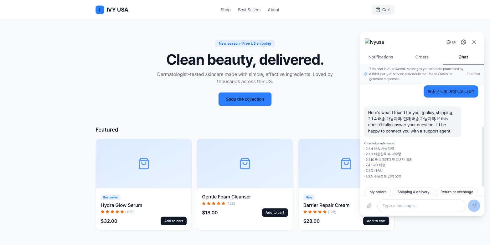
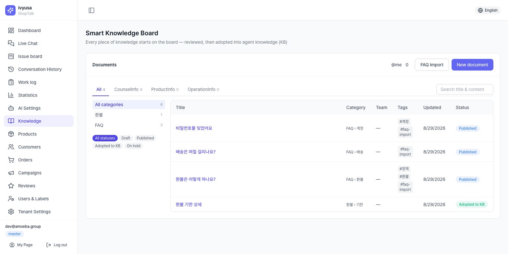
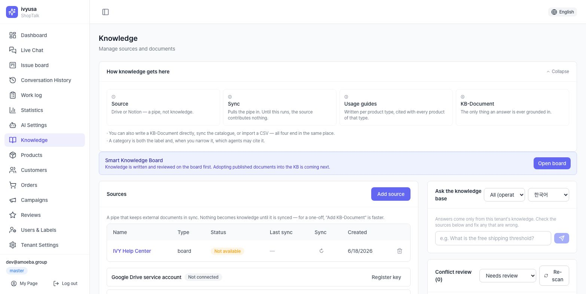
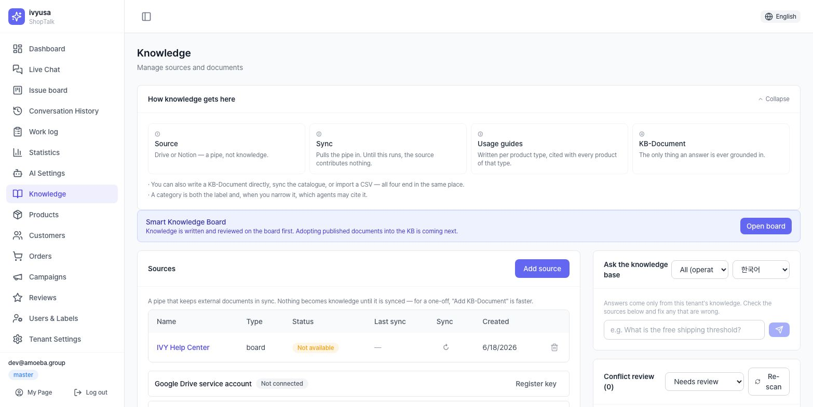
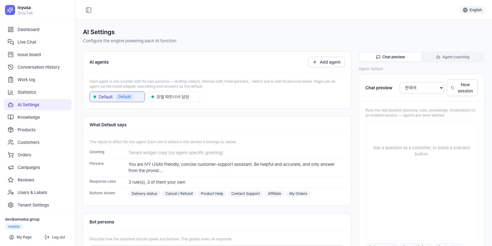
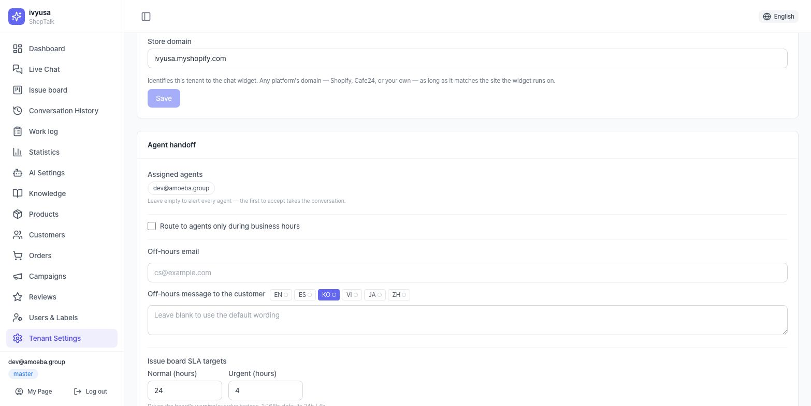

Hiểu pipeline trả lời của AI
Đây là toàn bộ luồng xử lý một tin nhắn của khách hàng. Mọi cài đặt trong tài liệu này đều là việc điều chỉnh một điểm nào đó trong luồng này.
Tin nhắn khách hàng
▼
① Phân loại ý định ─── cần đơn hàng·thông tin cá nhân → hướng dẫn xác minh danh tính (đăng nhập)
│ khớp deny-list: quy tắc "Không trả lời" → chuyển ngay /
│ quy tắc "Trả lời rồi chuyển" → trả lời qua ②~④ rồi mới chuyển
▼
② Tìm kiếm tri thức (RAG) ─ tìm căn cứ liên quan trong tài liệu tri thức đã đăng ký
▼
③ Tạo câu trả lời ─── soạn từ persona·quy tắc trả lời + căn cứ tìm được, tính độ tin cậy
▼
④ Kiểm duyệt ── kiểm tra quy tắc cấm (không đạt thì không hiển thị cho khách)
▼
⑤ Rẽ nhánh: độ tin cậy đủ → trả lời khách hàng (+nguồn)
độ tin cậy thấp / bị chặn / khách yêu cầu → hàng chờ nhân viên tư vấn (escalation)- Ngôn ngữ trả lời theo ngôn ngữ phiên của khách hàng (en/es/ko/vi/ja/zh).
- Tin nhắn do nhân viên tư vấn gửi cũng đi qua ④ kiểm duyệt y hệt (không thể bỏ qua).

Hiểu cấu trúc tri thức
| Tài liệu tri thức | Một bài viết AI dùng làm căn cứ trả lời. Gồm tiêu đề·danh mục·nội dung |
| Bảng tri thức (board) | Lớp biên tập nơi mọi tri thức được viết·duyệt trước (/knowledge/board) — tài liệu đã đăng trở thành căn cứ khi được "đưa vào KB" |
| Đưa vào KB | Nâng tài liệu bảng thành tài liệu KB — đưa vào lại sẽ cập nhật cùng tài liệu (không tạo bản sao) |
| Embedding | Thao tác lập chỉ mục chuyển tài liệu thành vector tìm kiếm được. Tự động khi đăng ký·sửa |
| RAG | Cách tìm tài liệu liên quan đến câu hỏi và chỉ tạo câu trả lời từ căn cứ đó |
| Nguồn | Kết nối tự động lấy tài liệu từ bên ngoài (bảng tin·Google Drive·Notion) |
| Nhóm | 3 phân loại lớn: CounselInfo (tư vấn) / ProductInfo (sản phẩm) / OperationInfo (vận hành) |
| Danh mục | Phân loại chi tiết dưới nhóm — quản lý theo cặp (nhóm, tên), phạm vi agent (mục 3.5) cũng gắn vào danh mục |
| Đang bật/hiển thị | Có nằm trong phạm vi tìm kiếm hay không — tài liệu tắt không được dùng làm căn cứ trả lời |
| Độ tin cậy | Chỉ số câu trả lời được căn cứ hỗ trợ đến đâu. Thấp thì chuyển tiếp nhân viên tư vấn |
Màn hình Kho tri thức (/knowledge): trên cùng là banner bảng tri thức và Đề xuất bổ sung tri thức;
bên trái quản lý nguồn·hướng dẫn sử dụng·danh mục·tài liệu; bên phải cố định bảng QA (trả lời bằng tri thức) và
Rà soát mâu thuẫn, nên có thể qua lại giữa đăng ký↔kiểm chứng trong một màn hình.
Các tab nhóm phía trên danh sách tài liệu (Tất cả/CounselInfo/ProductInfo/OperationInfo) quyết định đối tượng
thao tác của tài liệu·danh mục·công cụ hàng loạt.
Đăng ký tri thức
2.0 Con đường chuẩn — Smart Knowledge Board (khuyến nghị)
Con đường chuẩn là viết·duyệt mọi tri thức trên bảng trước, rồi đưa vào KB. [Viết trên bảng] là nút chính trên thẻ tài liệu; [Thêm tài liệu KB] (thêm trực tiếp) chỉ dành cho trường hợp khẩn.
- Viết: nhóm / Phân loại cấp 1·cấp 2 / Nhóm phụ trách / tiêu đề / thẻ / nội dung markdown + tệp đính kèm (50MB/tệp).
[[Tiêu đề tài liệu]]trong nội dung liên kết tài liệu bảng khác (xem backlink ở bảng Liên kết — liên kết theo tiêu đề; đổi tên sẽ hiển thị liên kết cũ là "chưa viết") - [Lưu nháp] (Bản nháp) → [Đăng] (Đã đăng) — tài liệu chưa đăng thì không thể đưa vào KB
- [Mô phỏng]: kiểm tra bằng câu hỏi của khách, trước khi đưa vào KB, xem tài liệu này có được trích dẫn không, cùng độ tin cậy·độ tương đồng. Golden-set A/B chạy các câu hỏi kiểm chứng (mục 6.3) không có/có tài liệu để cho thấy mức cải thiện (mỗi câu 2 lần gọi LLM)
- [Đưa vào KB]: người duyệt chọn danh mục (bỏ trống thì dùng phân loại cấp 2 → cấp 1) → tạo tài liệu KB. Đưa vào lại sẽ cập nhật cùng tài liệu KB và embedding lại — sửa bản gốc trên bảng thì huy hiệu "chưa cập nhật bản sửa" hiển thị cho đến khi đưa vào lại
- Cộng tác: bình luận bên phải (
@nhắc đồng nghiệp — dồn vào hộp @tôi trên danh sách bảng), và [Tạm hoãn]/[Đưa vào lại]/[Về trạng thái đã đăng] để chuyển trạng thái
Di trú FAQ hàng loạt: [Nhập FAQ] trên danh sách bảng — xuất bảng FAQ/Hỏi đáp hiện có ra CSV/XLSX rồi tải lên; mỗi dòng thành một tài liệu bảng đã đăng (bắt buộc title·content, tùy chọn category1·category2·tags; tiêu đề trùng bị bỏ qua).
- Sửa tài liệu KB đã đưa vào ngay phía KB sẽ làm nó lệch khỏi bản gốc trên bảng — chi tiết hiển thị cảnh báo và [Mở bản gốc trên bảng]. Hãy sửa trên bảng rồi đưa vào lại.
- Mô phỏng báo "không được trích dẫn" thì bổ sung tiêu đề·nội dung bằng từ ngữ của khách rồi mô phỏng lại — nhanh hơn một bước so với đưa vào KB rồi mới kiểm tra bằng bảng QA.

2.1 Đăng ký·sửa tài liệu thủ công (dành cho trường hợp khẩn)
Thẻ tài liệu → [Thêm tài liệu KB] → chọn nhóm / nhập tiêu đề / danh mục (gợi ý tự động chỉ hiện danh mục của nhóm đã chọn) / nội dung → lưu. Bấm tiêu đề để mở cửa sổ chi tiết, quản lý các mục sau trong [Sửa].
| Trường | Công dụng |
|---|---|
| URL gốc | Liên kết tài liệu ngoài làm căn cứ (mở trực tiếp từ danh sách) |
| Hiệu lực từ | Ngày chính sách có hiệu lực |
| Chu kỳ rà soát (ngày) | Quá hạn thì danh sách hiển thị huy hiệu stale (cần rà soát) → mục 3.3 |
| Nội dung | Khi lưu sẽ tự động embedding lại (cập nhật chỉ mục tìm kiếm) |
- 1 tài liệu = 1 chủ đề. Thay vì dồn "giao hàng+hoàn tiền+đổi hàng" vào một tài liệu, tách ra đăng ký thì tìm kiếm mới chính xác.
- Đưa vào tiêu đề·nội dung cách nói thực tế của khách hàng ("giao hàng mất bao lâu") — tìm kiếm theo độ tương đồng nên càng gần từ ngữ của khách càng khớp.
- Chính sách phiên bản cũ đừng xóa mà tắt hiển thị (OFF) để loại khỏi căn cứ. Lịch sử còn lại và dễ khôi phục.
- Danh sách nay ưu tiên tiêu đề: các cột là nhóm (chỉ tab Tất cả)·huy hiệu nguồn gốc (trực tiếp/bảng/tệp/YouTube/Drive/Notion/danh mục)·danh mục·tiêu đề·ngày sửa; công tắc hiển thị·trạng thái·xóa chuyển vào menu ⋯ (Thêm). Bộ lọc·sắp xếp chạy phía máy chủ. Tài liệu "đang chờ" vẫn được dùng ngay trong tìm kiếm từ khóa.

2.2 Tri thức sản phẩm — đồng bộ danh mục sản phẩm · CSV · hướng dẫn sử dụng
| Bộ nhớ đệm sản phẩm | Danh sách sản phẩm gốc đồng bộ từ nền tảng (kết quả đồng bộ sản phẩm ở màn hình cài đặt) |
| Đồng bộ danh mục sản phẩm | Chuyển bộ nhớ đệm sản phẩm → tài liệu tri thức sản phẩm. 2 bước xem trước → thực thi |
| Gộp biến thể | Gom các biến thể phân tách bằng gạch ngang như "Son-Đỏ/Son-Hồng" thành 1 sản phẩm đại diện |
| Giữ bản biên tập | Bảo toàn tài liệu sản phẩm được người vận hành chỉnh tay, không để đồng bộ ghi đè |
| Hướng dẫn sử dụng | Tài liệu cách dùng chung theo loại sản phẩm — căn cứ trả lời riêng biệt với tài liệu sản phẩm |
- [Đồng bộ từ danh mục sản phẩm] → xem trước chạy trước: số đã quét và kết quả dự kiến (tạo mới/sửa/giữ bản biên tập/gộp hấp thu/không đổi/treo lại), ước lượng lô embedding, danh sách mẫu các mục gộp
- Kiểm tra trong mẫu gộp xem các sản phẩm khác nhau có bị gom nhầm thành một không rồi bấm [Thực thi]
- Theo dõi 2 dòng tiến độ (soạn/embedding), sau khi xong kiểm tra số mục embedding thất bại trong bảng kết quả (mục thất bại không tìm kiếm được — cần chạy lại)
Nhập CSV sản phẩm: [Nhập CSV sản phẩm] → chọn tệp → kiểm tra thống kê kết quả (đã phân tích/tạo/sửa/bỏ qua/không hợp lệ/đã embedding) và lỗi theo dòng (tối đa 20 mục). Tải lại cùng sản phẩm sẽ ghi đè (upsert).
Hướng dẫn sử dụng: kiểm tra huy hiệu đã viết/chưa viết theo loại trong thẻ → [Viết] → lưu tiêu đề·nội dung (từ 20 ký tự trở lên).
- Nhất định phải xem trước. Gộp sai chỉ có thể bắt được ở bước xem trước, trước khi thực thi.
- Sản phẩm trên nền tảng thay đổi thì phải chạy 2 bước theo thứ tự: đồng bộ sản phẩm ở [Cài đặt gian hàng] → đồng bộ danh mục sản phẩm ở [Kho tri thức] mới được phản ánh.
- Mô tả sản phẩm sơ sài thì thẻ tag là nguyên liệu của tri thức — dọn gọn tag sản phẩm phía nền tảng sẽ nâng chất lượng câu trả lời.
2.3 Tích hợp nguồn ngoài (bảng tin · Google Drive · Notion)
| Tài khoản dịch vụ | Tài khoản robot cho tích hợp Google Drive — phải chia sẻ thư mục cho email của tài khoản này mới đọc được |
| Integration | Đơn vị cho phép công cụ ngoài truy cập trong Notion — cần "kết nối" vào trang đích |
| Số đếm kết quả đồng bộ | Số mục tạo·sửa·bỏ qua·ẩn. dropped/truncated là cảnh báo có phần không lấy về được |
- Đăng ký thông tin xác thực — Google Drive: dán JSON khóa tài khoản dịch vụ → chia sẻ thư mục đích cho
email tài khoản dịch vụ được hiển thị → [Kiểm tra kết nối] / Notion: đăng ký token (
ntn_…) → kết nối integration vào trang·DB đích → [Kiểm tra kết nối] - [Thêm nguồn] → chọn loại (board/gdrive/notion) → gdrive nhập ID thư mục, notion nhập ID trang·DB hoặc URL chia sẻ
- Chạy ↻(đồng bộ) trên hàng nguồn → kiểm tra số đếm kết quả ở cột Đồng bộ lần cuối
Loại được hỗ trợ: bảng tin ✅ · Google Drive ✅ · Notion ✅ · nguồn kho lưu trữ GitHub (repository) không được hỗ trợ.
- Thấy cảnh báo đỏ dropped/truncated nghĩa là trang quá lớn hoặc quá sâu nên một phần bị cắt — kiểm tra phần cuối tài liệu đó và chia nhỏ bản gốc rồi đồng bộ lại. Lỗi Notion hiển thị lý do ngay trong ô Đồng bộ lần cuối ("chưa chia sẻ với integration" → trong Notion, trang ⋯ → Connections → thêm integration).
- Đồng bộ đột nhiên được 0 mục (hủy chia sẻ thư mục·hủy kết nối integration v.v.) thì các tài liệu hiện có được giữ nguyên, không bị ẩn — hãy khôi phục kết nối trước.
- Bấm ô trạng thái của nguồn = bật↔tắt. Nguồn tắt chỉ dừng đồng bộ, tài liệu đã lấy về vẫn còn.
- [Xem lịch sử chuyển đổi] cạnh tên nguồn: lịch sử các lần đồng bộ (thành công/thất bại · tạo/cập nhật/giữ/ẩn · lập chỉ mục · thời gian · lý do) và tài liệu đã chuyển đổi từ nguồn này.
- Xóa nguồn là an toàn — chỉ nguồn bị xóa; tài liệu của nó bị vô hiệu hóa chứ không bị xóa (bật lại từ danh sách tài liệu).
2.4 Tải xuống hàng loạt ↔ nhập hàng loạt (vòng CSV/XLSX)
[Tải xuống hàng loạt ▾] (CSV/Excel) và [Nhập hàng loạt] dùng chung một hợp đồng cột:
category · title · content (bắt buộc) + external_key · source_url (tùy chọn).
Hai nút chỉ xuất hiện khi đã chọn tab nhóm (ẩn ở tab Tất cả).
Chọn tab nhóm → tải về bằng [Tải xuống hàng loạt] và chỉnh sửa → tải lên lại bằng [Nhập hàng loạt].
Hàng có cùng external_key (hoặc cùng tiêu đề đã cắt khoảng trắng) cập nhật tài liệu hiện có;
hàng không đổi bị bỏ qua — toast kết quả báo số tạo·cập nhật·bỏ qua.
- Tối đa 5.000 hàng/5MB. CSV chỉ nhận UTF-8 — từ Excel tiếng Hàn, lưu dạng "CSV UTF-8" hoặc tải lên chính tệp
.xlsx. - Tab CounselInfo có khối Hướng dẫn tư vấn chung (KB tư vấn khởi đầu dùng ngay) — tải về, chỉnh thời hạn·chi phí theo chính sách cửa hàng rồi tải lên để lấp đầy tri thức ban đầu trong một lần.
- Tài liệu từ nguồn ngoài (danh mục·bảng·Notion·Drive) vẫn sửa được, nhưng lần đồng bộ tiếp theo có thể ghi đè — nguyên tắc là sửa ở bản gốc.
2.5 Nhập bằng AI (tệp·YouTube → bản nháp → bảng)
[Nhập bằng AI] — tải lên tệp (pdf·docx·xlsx·csv·md, tối đa 15MB) hoặc URL YouTube có phụ đề công khai, AI sẽ tách nội dung thành các bản nháp cấp bài viết.
Chọn nhóm (cẩm nang tư vấn/gợi ý sản phẩm/cẩm nang vận hành) → tải tệp/URL → [Bắt đầu phân tích] (chạy nền — có thể rời màn hình) → duyệt bản nháp (chọn, chỉnh tiêu đề/danh mục, chú ý huy hiệu "cần kiểm tra") → [Lưu N mục đã chọn].
Được đăng lên bảng, không vào thẳng KB — hãy duyệt rồi đưa vào KB tại đó (mục 2.0). Tệp không có lớp văn bản (PDF scan) và video không phụ đề thì không phân tích được.
Kiểm chứng·quản lý chất lượng tri thức
| Bảng QA tri thức | Bảng thử nghiệm đặt câu hỏi với tri thức từ góc nhìn khách hàng (cố định bên phải) |
| Nguồn trích dẫn (citation) | Danh sách tài liệu làm căn cứ cho câu trả lời — hiển thị kèm chỉ số độ tương đồng |
| Mâu thuẫn (conflict) | Trạng thái hai tài liệu bị phát hiện chứa nội dung mâu thuẫn nhau |
| stale | Huy hiệu tài liệu đã quá chu kỳ rà soát, cần xác nhận lại |
| Khoảng trống tri thức (gap) | Chủ đề khách đã hỏi nhưng tri thức không có câu trả lời — hệ thống đề xuất thành bản nháp tài liệu |
| Đề xuất câu trả lời | Đề xuất nâng câu trả lời thực tế của nhân viên tư vấn thành tài liệu tri thức (bắt buộc người duyệt) |
| Revision | Ảnh chụp lịch sử thay đổi của tài liệu — hỗ trợ xem diff·khôi phục |
3.1 Bảng QA tri thức — nhất định kiểm tra sau khi đăng ký
Chọn agent (Tất cả (góc nhìn người vận hành) hoặc agent cụ thể — kiểm thử đúng theo phạm vi agent mục 3.5) → nhập câu hỏi → kiểm tra câu trả lời + chỉ số độ tin cậy + danh sách nguồn → tài liệu căn cứ sai thì bấm [Sửa] cạnh nguồn (tài liệu đó mở ngay ở chế độ sửa) → sửa xong bấm [Hỏi lại] để kiểm tra lại.

- Hiện huy hiệu bị kiểm duyệt chặn nghĩa là vướng quy tắc cấm (mục 4.5) — câu trả lời mà nếu là khách thật thì đã không được hiển thị.
- Nguồn có huy hiệu
conflicted/stalethì hãy xử lý tài liệu đó trước. - Mỗi khi đổi chính sách, thói quen ném "3 câu hỏi khách có thể hỏi" là bài kiểm tra hồi quy rẻ nhất (tự động hóa xem mục 6.3).
3.2 Rà soát mâu thuẫn
Bảng Rà soát mâu thuẫn → theo từng mục kiểm tra kết luận (Mâu thuẫn/Trùng lặp/Liên quan), độ tương đồng và lý do phán định → chọn hành động. Có thể quét lại toàn bộ bằng [Quét lại].
| Hành động | Tác dụng |
|---|---|
| Theo A · ẩn B / Theo B · ẩn A | Giữ bên được chọn và tắt bên còn lại |
| Giữ cả hai | Phán định không phải mâu thuẫn — cả hai vẫn bật |
| Không phải mâu thuẫn | Đóng mục mâu thuẫn này |
| Đánh giá lại cặp này | Sửa tài liệu xong yêu cầu đánh giá lại (mục thất bại cũng thử lại tại đây) |
Mâu thuẫn thường sinh ra do khi sửa chính sách mà không gỡ phiên bản cũ. Đừng dừng ở "Theo A" — hãy ghi ngày hiệu lực vào tài liệu được giữ để lần sửa sau không lặp lại.
3.3 Chu kỳ rà soát·stale / lịch sử thay đổi
Quá hạn chu kỳ rà soát (ngày) đặt trong phần sửa tài liệu thì danh sách gắn huy hiệu stale.
Bấm [Đánh dấu đã rà soát] trong hộp trạng thái rà soát ở chi tiết tài liệu thì thời hạn được tính lại.
Trong tab lịch sử thay đổi, xem diff theo revision và có thể [Khôi phục].
Tài liệu hay thay đổi như phí giao hàng·khuyến mãi đặt chu kỳ rà soát ngắn khoảng 30 ngày, tài liệu ổn định như thông báo pháp lý đặt dài — huy hiệu stale sẽ trở thành danh sách việc cần làm thực thụ.
3.4 Đề xuất bổ sung tri thức · đề xuất câu trả lời (vòng khép kín)
- Đề xuất bổ sung tri thức (trên cùng, chỉ hiện khi có mục): chủ đề hay bị chuyển tiếp, ý định không có tài liệu căn cứ và cách nhân viên đã xử lý được tích lũy thành ứng viên KB — [Duyệt thành tài liệu tri thức] (tạo tài liệu sau khi sửa tiêu đề·nội dung) / [Bỏ qua]. Không có gì áp dụng tự động
- Đề xuất câu trả lời (hiện khi có mục chờ): đề xuất đưa câu trả lời thực tế của nhân viên tư vấn vào tri thức — kiểm tra câu hỏi·câu trả lời·liên kết hội thoại nguồn rồi [Duyệt] / [Từ chối] (lý do hiển thị cho người đề xuất)
Nhất định kiểm tra mã đơn hàng·tên v.v. không còn sót trong câu trả lời — tài liệu tri thức được tái sử dụng làm căn cứ cho câu trả lời của mọi khách hàng.
Hai kênh này là con đường để tri thức tự lớn lên. Tạo thói quen dọn sạch mỗi tuần một lần sẽ giảm nguyên nhân gốc của "AI cứ chuyển sang nhân viên tư vấn".
3.5 Phạm vi agent của danh mục (tri thức theo từng agent)
Mỗi hàng trong thẻ Danh mục hiển thị phạm vi dưới dạng nút — "Tất cả agent" (mặc định; phạm vi trống = mở cho tất cả) hoặc "Agent n/tổng". Bấm nút → chọn Tất cả agent (mặc định) / Chỉ agent đã chọn → lưu. Thu hẹp nghĩa là chỉ agent được chọn mới trích dẫn được tài liệu của danh mục đó (tái sử dụng câu trả lời cũng theo cùng phạm vi).
- ⚠️ Agent tạo sau không thấy được danh mục đã thu hẹp — thêm agent mới thì rà lại các phạm vi.
- Danh mục sinh từ catalog (thương hiệu) luôn dùng được bởi mọi agent và không thể giới hạn.
- Chọn agent trong bảng QA (mục 3.1) là cách chắc chắn nhất để kiểm chứng "agent này thực sự thấy gì".
Cài đặt AI
| Nhân viên AI (agent) | Đơn vị bot tư vấn có bộ persona·quy tắc riêng — tạo nhiều bot khác nhau cho từng kênh·trang |
| Nhân viên mặc định | Agent mà widget dùng khi không chỉ định riêng (luôn hoạt động) |
| Đoạn mã điểm vào | Đoạn mã cài đặt để mở widget với một agent cụ thể |
| Persona / quy tắc trả lời | Mô tả giọng điệu·nguyên tắc của bot / danh sách quy tắc phải tuân thủ (nạp vào bước ③ pipeline) |
| Nút kịch bản | Nút menu nhanh dưới cùng của widget — chọn trong 7 loại hành động; nhãn theo từng ngôn ngữ |
| Hội thoại mặc định | Chỉnh nội dung phản hồi·chip tiếp theo của 7 kịch bản có sẵn (mục 4.7) |
| Chức năng AI | 5 vị trí AI được dùng (chat/rag/summary/assist/moderation) — mỗi vị trí chỉ định công cụ |
| Quy tắc kiểm duyệt | Quy tắc cấm kiểm tra tin nhắn gửi đi (bước ④ pipeline) |
| Tái sử dụng câu trả lời | Phát lại câu trả lời cũ đã duyệt cho cùng câu hỏi, không gọi LLM |
| Ghi chú thay đổi | Dòng ghi chú để lại khi lưu persona·quy tắc — tra trong lịch sử thay đổi cài đặt |

4.1 Nhân viên AI (đa persona)
Chọn một agent trong thẻ Nhân viên AI thì các thẻ persona·quy tắc trả lời bên dưới chuyển thành của agent đó. Dùng [Thêm nhân viên] đặt tên·mã (chữ thường) để tạo, quản lý [Đặt làm mặc định]·công tắc hoạt động·[Xóa], sao chép đoạn mã điểm vào để cài lên trang·kênh cụ thể.
Khi sửa agent, hai trường danh tính hướng tới khách được đặt riêng: Tên hiển thị trên widget (hiện ở đầu widget — bỏ trống thì dùng tên cửa hàng) và Tin nhắn phản hồi đầu tiên (theo tab ngôn ngữ — bong bóng đầu của phiên được gán agent này; ngôn ngữ bỏ trống dùng tin nhắn đầu chung của cửa hàng). Dưới thẻ agent, thẻ "Cài đặt áp dụng cho {agent}" tóm tắt dạng chỉ đọc các giá trị thực sự áp dụng (kể cả giá trị mặc định thay thế) cho lời chào·persona·quy tắc·nút hiển thị.
- Agent được gán một lần khi phiên bắt đầu — đổi đoạn mã giữa chừng cũng không đổi bot của phiên đang chạy.
- Vào bằng mã không tồn tại thì rơi về agent mặc định (widget không chết).
- "Nhân viên AI" ở đây không liên quan tài khoản nhân viên tư vấn (con người) — tài khoản người thật ở menu [Người dùng].
4.2 Persona·quy tắc trả lời
Viết nội dung persona → nhập ghi chú thay đổi → lưu. Quy tắc trả lời thêm từng dòng bằng [Thêm quy tắc] (dòng trống bị loại khi lưu).
- Persona chứa danh tính·tông giọng, quy tắc chứa ràng buộc hành vi — tách ra như vậy. Thông tin sự thật (phí giao hàng v.v.) đưa vào tài liệu tri thức — persona không được tìm kiếm.
- Sau khi lưu, hiệu lực có thể mất tối đa 60 giây do bộ nhớ đệm.
- [Nạp vào ô soạn thảo] trong Lịch sử thay đổi chỉ nạp thì chưa áp dụng — phải lưu mới có hiệu lực.
4.3 Nút kịch bản
Chọn tab Ngôn ngữ của nhãn (6 ngôn ngữ) ở trên, rồi từng hàng chỉnh nhãn (tối đa 60 ký tự) / hành động / ô chọn đang bật / thứ tự (↑↓) / [Agent] (agent nào hiển thị nút này — dùng chung hoặc chỉ agent đã chọn). Nhãn theo từng ngôn ngữ: nhãn nhập chỉ áp dụng cho tab đang chọn (6 nút mặc định có sẵn nhãn cả 6 ngôn ngữ). Gợi ý dưới mỗi nhãn cho biết kịch bản có sẵn mà nút chạy — "không có kịch bản" nghĩa là nhãn được gửi làm tin nhắn chat. Trong [Sửa câu trả lời], chỉnh nội dung phản hồi theo hành động bằng tab 6 ngôn ngữ và cấu hình chip tiếp theo (nhãn·hành động·URL) — trình soạn mở với nội dung mặc định đã điền sẵn; sửa thì ghi đè, để nguyên thì không lưu ([Khôi phục mặc định] có sẵn).
| Hành động | Hành vi thực tế trong widget |
|---|---|
| Tình trạng giao hàng | Câu trả lời cố định về chính sách giao hàng + nút tiếp theo |
| Hủy / Hoàn tiền | Câu trả lời cố định về hủy·hoàn tiền·trả hàng + nút tiếp theo |
| Hỗ trợ sản phẩm | Menu con (cách dùng·thành phần·đổi/trả·hàng về lại) |
| Liên hệ hỗ trợ | Biểu mẫu để lại liên hệ — đường kết nối nhân viên tư vấn |
| Đơn hàng của tôi | Chuyển đến tab đơn hàng sau khi xác minh danh tính |
| Cộng tác viên | Thẻ giới thiệu hợp tác |
| Gửi tin nhắn | Gửi nguyên văn nhãn làm câu hỏi → AI trả lời dựa trên tri thức |
- Muốn biến câu hỏi thường gặp thành nút, dùng hành động Gửi tin nhắn với nhãn là câu hỏi (ví dụ: "Điều kiện miễn phí giao hàng là gì?").
- Thay vì xóa nút, hãy ẩn bằng cách bỏ chọn đang bật. Khuyến nghị luôn bật Liên hệ hỗ trợ.
- Khi sửa chính sách, cập nhật đồng thời để nội dung câu trả lời cố định và tài liệu tri thức không lệch nhau.
4.4 Chức năng AI (công cụ·tham số)
Trên hàng của từng chức năng chọn công cụ áp dụng, nhập temperature (0~1)·max_tokens rồi lưu riêng từng mục. Chức năng chưa chỉ định hiển thị huy hiệu kế thừa/mặc định/stub cùng tên công cụ thực tế đang áp dụng.
| Chức năng | Công dụng thực tế |
|---|---|
| chat | Điều khiển hội thoại như phân loại ý định tin nhắn khách |
| rag | Tạo câu trả lời dựa trên tri thức — phần chính của câu trả lời khách nhìn thấy |
| summary | Tóm tắt hội thoại (lịch sử·bản tóm tắt khi chuyển tiếp) |
| assist | Hỗ trợ AI trong bảng điều khiển của nhân viên tư vấn |
| moderation | Phán định LLM cho quy tắc cấm dạng ngữ cảnh (context) |
Chuỗi dự phòng: công cụ đã chọn không dùng được → mặc định của tenant → mặc định của nền tảng → stub (trả lời demo) — tự hạ bậc theo thứ tự, hội thoại không bị đứt.
Các mô hình Claude hiện hành từ chối tham số lấy mẫu nên hệ thống chủ đích không gửi. Nhập cũng bị bỏ qua; chỉ áp dụng cho các công cụ dòng OpenAI. max_tokens áp dụng bình thường (trả lời chat khuyến nghị 512~1024).
Còn huy hiệu stub thì chưa phải chất lượng dịch vụ thật. Engine đến từ hai nơi:
engine riêng của tenant (thẻ Engine AI trong [Cài đặt gian hàng → Cài đặt cơ bản] — API key của bạn,
ưu tiên hơn engine nền tảng, chi phí tính vào tài khoản của bạn) và engine nền tảng (/admin/ai-engines).
Mức dùng thực tế xem ở thẻ Mức dùng AI cùng tab (kèm cảnh báo số lần rơi về stub).
Mô hình embedding cho tìm kiếm tri thức không có trong màn hình này (dùng chung mọi tenant, máy chủ quản lý).
4.5 Quy tắc kiểm duyệt (cấm)
| Mục | Lựa chọn | Ý nghĩa |
|---|---|---|
| Loại | Từ / Cụm từ | Khớp chứa (không phân biệt hoa thường) |
| Biểu thức chính quy | Khớp mẫu | |
| Ngữ cảnh (LLM) | Viết "cần chặn cái gì" thành câu, AI phán định từng tin nhắn | |
| Phạm vi | Chỉ AI / Chỉ nhân viên / Cả hai | Kiểm tra tin nhắn của bên gửi nào |
| Hành động | Chặn | Không gửi tin nhắn ra (câu trả lời AI thì chuyển sang chuyển tiếp nhân viên tư vấn) |
| Che | Chỉ phần vướng bị xử lý thành ▇▇▇ rồi chuyển đi | |
| Diễn đạt lại | AI sửa thành câu an toàn rồi chuyển đi |
- Cổng này không thể tắt, kiểm tra thất bại thì vì an toàn xử lý là chặn. Tin nhắn của nhân viên tư vấn bị từ chối thì đổi cách diễn đạt rồi gửi lại.
- Loại ngữ cảnh (LLM) dùng công cụ của chức năng moderation — đang stub thì không có chất lượng phán định.
- Quy tắc từ khóa quá mức sẽ chặn cả câu trả lời bình thường. Bắt đầu bằng Che/Diễn đạt lại, xem log rồi mới nâng lên chặn. Hiệu lực tối đa 60 giây.
4.6 Tái sử dụng câu trả lời
Trong thẻ Tái sử dụng câu trả lời: tìm các cặp hỏi-đáp đã lưu (lọc chỉ mục đang bật), sửa/xóa từng mục, [Tắt tất cả] để dừng hàng loạt.
Câu trả lời tái sử dụng được gửi ngay không gọi LLM nên nhanh và rẻ, nhưng khi chính sách thay đổi, câu trả lời cũ có thể vẫn được gửi nguyên xi. Hãy đưa việc sửa/tắt các mục liên quan vào danh sách kiểm tra mỗi khi sửa chính sách. Câu trả lời tái sử dụng vẫn qua kiểm duyệt, và cũng theo phạm vi agent của danh mục (mục 3.5).
4.7 Hội thoại mặc định (7 kịch bản có sẵn)
Thẻ Hội thoại mặc định liệt kê toàn bộ kịch bản ShopTalk cung cấp sẵn — kể cả những kịch bản khách chỉ đến được qua chip tiếp theo — tổng cộng 7 (hủy/hoàn tiền · hủy đơn · chính sách hoàn tiền · trả/đổi hàng · chính sách giao hàng · trợ giúp đơn hàng · trợ giúp sản phẩm chung).
[Xem / sửa] trên hàng → chọn ngôn ngữ → chỉnh Câu của khách (hiển thị như thể khách tự nhập khi bấm nút) / nội dung phản hồi / chip tiếp theo / hành động sau trả lời (ở lại chat·đơn hàng của tôi·biểu mẫu liên hệ·thẻ cộng tác viên· kết nối nhân viên·mở URL) → lưu.
- Huy hiệu trên mỗi hàng cho biết đường tiếp cận: "Nút menu · {hành động}" vs "Chỉ qua chip tiếp theo"; số ngôn ngữ đã sửa cũng hiển thị.
- Nội dung mặc định mở với ô đã điền sẵn — để nguyên thì không lưu, sửa thì ghi đè. [Khôi phục mặc định] đưa về ban đầu.
- Đảm bảo nội dung kịch bản cố định và chính sách trong tài liệu tri thức không lệch nhau — sửa chính sách thì cập nhật cùng lúc (mục 7).
Cài đặt tiếp khách live chat
| Escalation (chuyển tiếp) | Việc AI đẩy hội thoại sang hàng chờ nhân viên tư vấn |
| Handoff (chuyển tiếp tư vấn) | Bộ cài đặt quyết định phân công·thời gian·hướng dẫn sau khi chuyển tiếp |
| Giờ làm việc | Khung giờ nhân viên tư vấn tiếp khách — ngoài khung này chuyển sang hướng dẫn ngoài giờ·tiếp nhận email |
| SLA | Thời gian mục tiêu phản hồi — tiêu chuẩn cho huy hiệu trễ (⚠️/🔥) trên bảng yêu cầu |
| Hàng chờ (waiting) | Trạng thái hội thoại đã chuyển tiếp đang đợi nhân viên tư vấn tiếp nhận |
5.1 Người phụ trách·giờ làm việc·hướng dẫn ngoài giờ
- Nhân viên được phân công — tích chọn nhân viên nhận chuyển tiếp (bỏ trống thì báo cho mọi nhân viên; ai nhận trước người đó tiếp)
- Công tắc Chỉ kết nối trong giờ làm việc → múi giờ·bắt đầu/kết thúc·ngày trong tuần, khi cần công tắc giờ nghỉ (giờ nghỉ xử lý như ngoài giờ)
- Email ngoài giờ — địa chỉ nhận câu hỏi ngoài giờ làm việc (hiển thị cảnh báo nếu chưa cấu hình SMTP)
- Thông báo ngoài giờ gửi cho khách hàng — viết theo từng tab ngôn ngữ (bỏ trống thì dùng mặc định)
- Mục tiêu SLA của bảng yêu cầu — thường/khẩn cấp (giờ, 1~168h; mặc định 24h/4h)
- Chuyển tiếp bắt buộc theo chính sách (deny-list) — đăng ký quy tắc từ khóa (phân tách bằng phẩy) + loại yêu cầu + nhãn phụ trách + cách hiển thị với khách. Hai chế độ: Không trả lời (chuyển ngay, mặc định) / Trả lời rồi chuyển (trả lời từ tri thức trước rồi vẫn chuyển) — kiểu nào nhân viên cũng được gọi, và yêu cầu (issue) được tạo sẽ tự động gán loại·nhãn.

- Đặt múi giờ của giờ làm việc chính xác theo cửa hàng — cửa hàng ở Mỹ mà để giờ Hàn Quốc thì hướng dẫn sẽ ngược hết.
- Tiếp nhận email ngoài giờ cần cấu hình SMTP máy chủ trước — thấy cảnh báo thì đề nghị quản trị viên nền tảng.
- Không chỉ định người phụ trách nào thì hội thoại chuyển tiếp chỉ dồn trong hàng chờ chung — chỉ định tối thiểu 1 người.
5.2 Hiểu điều kiện chuyển tiếp (escalation)
| Kích hoạt | Hành vi |
|---|---|
| Độ tin cậy thấp | Kèm câu "Tôi kết nối bạn với nhân viên tư vấn nhé?" vào câu trả lời và đưa vào hàng chờ |
| Bị kiểm duyệt chặn | Không hiển thị câu trả lời AI, hướng dẫn kết nối nhân viên tư vấn rồi vào hàng chờ |
| Khách yêu cầu | Nút kịch bản Liên hệ hỗ trợ hoặc yêu cầu rõ ràng → vào hàng chờ ngay |
| Chuyển tiếp bắt buộc theo chính sách | Quy tắc "Không trả lời": vào hàng chờ ngay lập tức, không có phản hồi AI. Quy tắc "Trả lời rồi chuyển": trả lời từ tri thức trước rồi vào hàng chờ. Tin nhắn vẫn được lưu·hiển thị bình thường, yêu cầu được đóng dấu loại·nhãn (không phải chức năng chặn tin nhắn) |
Ngưỡng độ tin cậy không điều chỉnh được trên màn hình (chính sách trong mã). Chuyển tiếp thường xuyên thì cách ứng phó đúng không phải là chỉnh ngưỡng
mà là bổ sung tri thức (xác định nguyên nhân bằng bảng QA mục 3.1). Xử lý hội thoại đã chuyển tiếp (tiếp nhận·bản tóm tắt AI·kết thúc·phân công lại)
làm tại bảng điều khiển live chat (/live-chat).
Vòng lặp kiểm chứng·cải thiện
| Xem thử | Bảng thử nghiệm trò chuyện với bot mà không tạo phiên khách hàng thật |
| Huấn luyện AI | Phản hồi bằng ngôn ngữ tự nhiên để nhận đề xuất thay đổi cấu hình, chỉ áp dụng khi được duyệt |
| Đề xuất (proposal) | Thẻ phương án thay đổi cấu hình do huấn luyện tạo ra — áp dụng/bỏ qua/hoàn tác được |
| Câu hỏi vàng | Danh sách câu hỏi đại diện muốn liên tục theo dõi chất lượng trả lời (đầu vào kiểm tra hồi quy) |
| Kiểm tra hồi quy | Sau khi đổi cấu hình·tri thức, chạy lại toàn bộ câu hỏi vàng để xác nhận câu trả lời không tệ đi |
| Đo độ dao động | Chạy lặp lại cùng câu hỏi để xem câu trả lời dao động đến đâu |
6.1 Xem thử
Tab Xem thử → chọn ngôn ngữ → [Phiên mới] → chọn chế độ (khách hàng/nhân viên) rồi nhập tin nhắn. Phản hồi hiển thị huy hiệu agent phụ trách và trạng thái chuyển tiếp. Bấm [Huấn luyện câu này] trên từng phản hồi để đính lượt đó vào phần huấn luyện.
Đã đổi cấu hình thì sau khi lưu phải bắt đầu bằng [Phiên mới] mới thấy hội thoại với cấu hình mới. Ngôn ngữ trả lời theo ngôn ngữ phiên, hãy đổi ngôn ngữ để kiểm tra các câu hỏi chính. Phiên xem thử không được tính vào số hội thoại của dashboard·thống kê.
6.2 Huấn luyện AI
Tab Huấn luyện AI → chọn chủ đề hoặc [Chủ đề mới] → kiểm tra lượt tham chiếu rồi ra chỉ dẫn bằng ngôn ngữ tự nhiên (ví dụ: "Hướng dẫn hoàn tiền dài quá. Gói trong 3 câu") → xem xét nội dung thay đổi trong thẻ đề xuất → [Áp dụng] / [Bỏ qua] / sau khi áp dụng có [Hoàn tác].
- Huấn luyện không thay đổi gì nếu chưa được duyệt. Đọc nội dung thay đổi thực tế (diff persona·quy tắc) trên thẻ đề xuất rồi mới áp dụng.
- Thông tin sự thật kiểu "miễn phí giao hàng cho đơn từ 50.000 won" là việc của tài liệu tri thức, không phải của huấn luyện — huấn luyện là công cụ tinh chỉnh giọng điệu·quy tắc hành vi.
- Câu chữ hơi khác đi là dao động bình thường. Độ tin cậy giảm·chuyển tiếp tăng mới là tín hiệu bất thường thật sự.
6.3 Kiểm tra hồi quy (câu hỏi vàng)
Thẻ Kiểm tra hồi quy → đăng ký câu hỏi vàng (10~20 câu đại diện) → [Chạy ngay] → bấm [So với lần trước] trong danh sách các lần chạy gần đây để so sánh song song thay đổi câu trả lời. [Đo độ dao động] cho thấy mức dao động của cùng một câu hỏi. Các câu hỏi đăng ký ở đây cũng được golden-set A/B của phần mô phỏng trên bảng (mục 2.0) tái sử dụng.
- Đưa vào câu hỏi vàng: ① câu hỏi gắn trực tiếp doanh thu (giao hàng·hoàn tiền) ② câu từng bị trả lời sai ③ câu thuộc diện chính sách sắp sửa đổi.
- Lấy việc chạy một lần ngay sau khi thay đổi tri thức hàng loạt·đồng bộ danh mục sản phẩm·sửa persona làm thói quen.
Huy hiệu
truncatedtrong kết quả nghĩa là số câu hỏi vượt trần thực thi nên chỉ chạy được một phần.
Danh sách kiểm tra vận hành
Khi chính sách thay đổi (ví dụ: sửa phí giao hàng)
- Sửa bản gốc trên bảng → [Đưa vào lại] (tài liệu đăng ký trực tiếp thì sửa tài liệu — tự động embedding lại) + tắt phiên bản cũ
- Kiểm tra nội dung Hội thoại mặc định (chính sách giao hàng·hủy/hoàn tiền và các kịch bản có sẵn khác, mục 4.7)
- Tìm các mục tái sử dụng câu trả lời → sửa/tắt câu trả lời cũ
- Kiểm tra 3 câu hỏi đại diện bằng bảng QA → chạy hồi quy câu hỏi vàng
- Cập nhật ngày hiệu lực·chu kỳ rà soát của tài liệu
Thói quen hằng tuần
- Dọn Đề xuất bổ sung tri thức·đề xuất câu trả lời (mục 3.4)
- Xử lý các mục chờ trong Rà soát mâu thuẫn (mục 3.2)
- Rà soát tài liệu có huy hiệu
stalevà huy hiệu "chưa cập nhật bản sửa" trên bảng (mục 3.3·2.0) - Chủ đề hay bị chuyển tiếp trong live chat → bổ sung tri thức
- Vừa tạo agent AI mới thì rà lại phạm vi agent của các danh mục (mục 3.5)
FAQ / Xử lý sự cố
- Q. Đã đăng ký tài liệu mà AI không biết nội dung đó.
- Kiểm tra ① có phải chỉ đăng lên bảng mà chưa đưa vào KB không (chưa đưa vào thì chưa là căn cứ trả lời) ② tài liệu có đang bật (hiển thị ON) không ③ danh mục có bị phạm vi agent che khỏi agent hiện tại không (mục 3.5 — kiểm chứng bằng cách chọn đúng agent trong bảng QA) ④ tài liệu có xuất hiện trong danh sách nguồn của bảng QA không. Không hiện thì bổ sung tiêu đề·nội dung bằng từ ngữ của khách. Cũng kiểm tra kết quả đồng bộ danh mục sản phẩm có mục embedding thất bại không.
- Q. Đã chạy Nhập bằng AI mà danh sách tài liệu không có gì.
- Bản nháp của Nhập bằng AI được đăng lên bảng, không vào thẳng KB. Phải duyệt trên bảng rồi [Đưa vào KB] thì mới xuất hiện trong danh sách tài liệu·căn cứ trả lời (mục 2.5).
- Q. AI cứ chuyển sang nhân viên tư vấn.
- Kiểm tra độ tin cậy·nguồn của câu hỏi đó trong bảng QA. Không có tài liệu căn cứ thì đăng ký là lời giải; có mà độ tin cậy thấp thì tách nhỏ tài liệu và bổ sung từ ngữ.
- Q. Tin nhắn của nhân viên tư vấn bị từ chối gửi.
- Là kiểm duyệt chặn. Đổi cách diễn đạt vướng quy tắc cấm (mục 4.5) rồi gửi lại. Quy tắc quá gắt thì đề nghị master nới hành động (chặn→che).
- Q. Câu trả lời chỉ ra tiếng Anh.
- Ngôn ngữ trả lời theo ngôn ngữ phiên của khách. Chỉ định ngôn ngữ trong Xem thử để kiểm tra. Viết persona bằng tiếng Hàn hay không không liên quan đến ngôn ngữ trả lời.
- Q. Đồng bộ Google Drive/Notion được 0 mục.
- Phần lớn do chia sẻ thư mục (email tài khoản dịch vụ) hoặc kết nối integration Notion bị đứt. Làm lại từ [Kiểm tra kết nối] ở thẻ thông tin xác thực.
- Q. Áp dụng đề xuất huấn luyện xong câu trả lời trở nên kỳ lạ.
- Khôi phục bằng [Hoàn tác] trên thẻ đề xuất đó. Cũng có thể mở phiên bản trước trong Lịch sử thay đổi, nạp vào ô soạn thảo rồi lưu.
- Q. Cùng một câu hỏi mà câu trả lời mỗi lần hơi khác nhau.
- Là dao động bình thường của LLM (mức dao động xem bằng Đo độ dao động mục 6.3). Nếu khác nhau không phải câu chữ mà là nội dung, hãy nghi ngờ mâu thuẫn tri thức (mục 3.2). Điều chỉnh temperature không áp dụng cho công cụ Anthropic (mục 4.4).